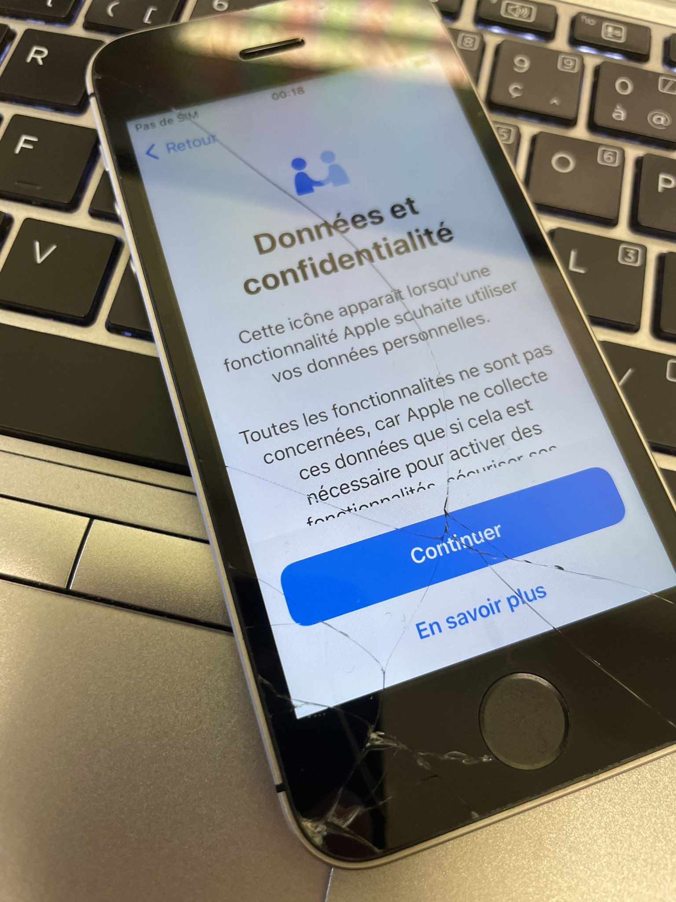
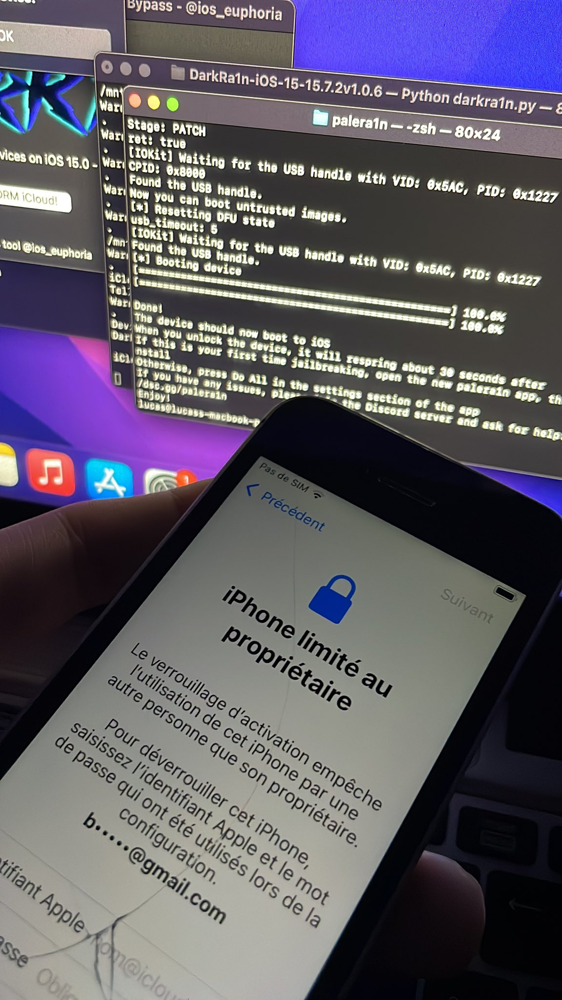
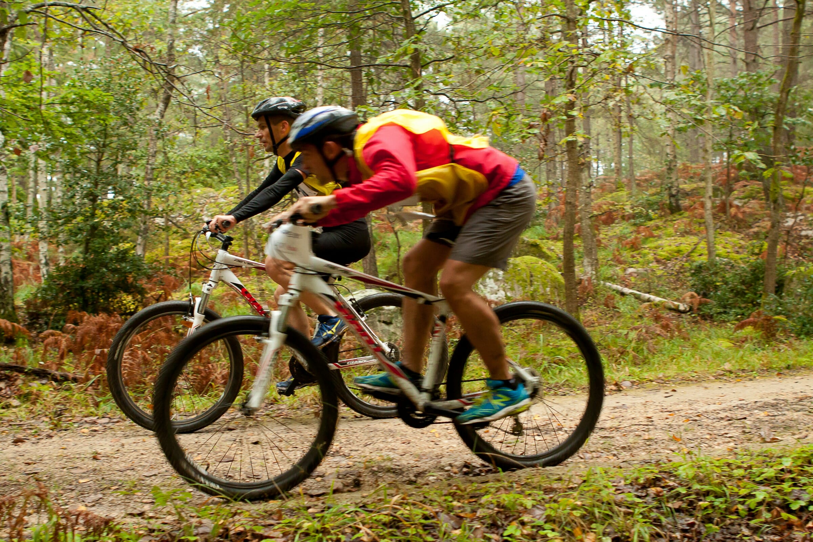

Tristan Devaux
18 ans
Email : tristan.devaux@etu.univ-st-etienne.fr
Vous pouvez envoyer un mail sur mon adresse mail universitaire en cliquant sur l'adresse ci-dessus.
0602204211
Je suis actuellement en BUT Réseaux et Telecommunications à l'IUT de Roanne, cette formation se déroule sur trois ans et je suis en première année.
"Votre temps est limité, ne le perdez pas à vouloir vivre la vie de quelqu'un de différent. Ne suivez pas les règles qui vous imposent de vivre comme les autres pensent que vous devriez vivre. Ne laissez pas les bruits des opinions des autres assourdir votre voix intérieure. Et surtout ayez le courage de faire ce que votre coeur et votre intuition vous demandent. Eux seuls savent ce que vous voulez vraiment devenir. Tout le reste est secondaire."
Steve Jobs, 24 Février 1955 - 5 Octobre 2011
Fondateur et Président Directeur Général d'Apple
J'ai quelques loisirs et occupations durant mon temps libres, je vais vous en présenter quelques exemples ici ! Let's go !!!
J'ai pas mal de temps libre, notamment les jeudis après-midi ou encore les weekends. Je suis donc à environ trois jours de temps libre par semaine.
Mes occupations varient d'une saison à l'autre, en été je pars souvent de chez moi à VTT pour me rendre en forêt. Je pars simplement, dans le but de me deconnecter du monde extérieur. J'embarque mon iPhone, mes AirPods, mon Apple Watch, mon drône et de quoi boire et manger et c'est parti pour avaler les kilomètres...
L'hiver par contre les occupations sont toutes autres, on passe du coq à l'âne... En effet lorsque les températures extérieures baissent je préfère rester au chaud chez moi. J'ai une occupation assez simple qui me prends du temps : jailbreaker des iPhone et essayer de cracker plusieurs produits (mais principalement ceux d'Apple...)
